On écoute
Un mariage, un baptême, un simple merci : tout commence par une conversation. Quelques photos, quelques mots, et Céline comprend ce que vous imaginez, même quand le temps presse.
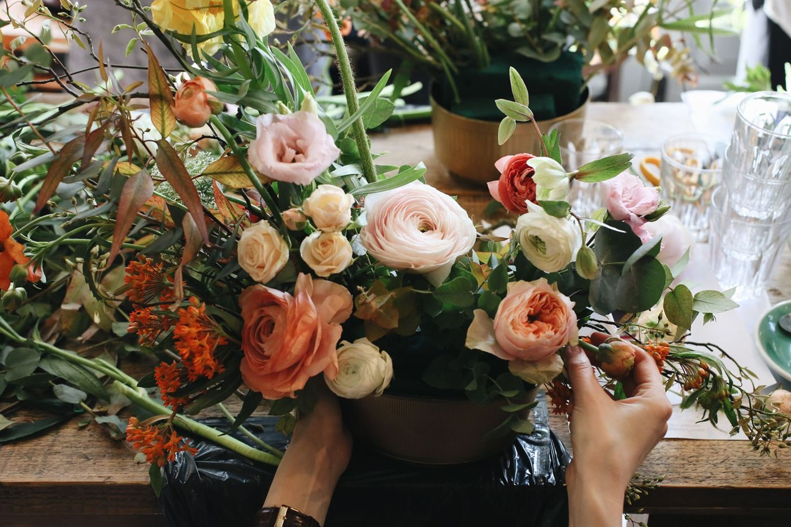
Fleuriste décoratrice · Meyrargues
Bouquets du jour, mariages, baptêmes, deuil, fleurs séchées et stabilisées : Céline compose à la main, vous choisissez l’émotion.
Chez Fleurs de Cel, une fleur n’est jamais « juste une fleur ». C’est un merci, un pardon, un je t’aime, un au revoir. Céline écoute, conseille avec sincérité, puis compose, avec douceur, beauté et beaucoup de passion.
Céline, fleuriste décoratrice
Un mariage, un baptême, un simple merci : tout commence par une conversation. Quelques photos, quelques mots, et Céline comprend ce que vous imaginez, même quand le temps presse.

Roses pêche, œillets, carthames orange, limonium, eucalyptus, fleurs séchées… Des fleurs fraîches sélectionnées une à une, pour une belle tenue dans la durée.
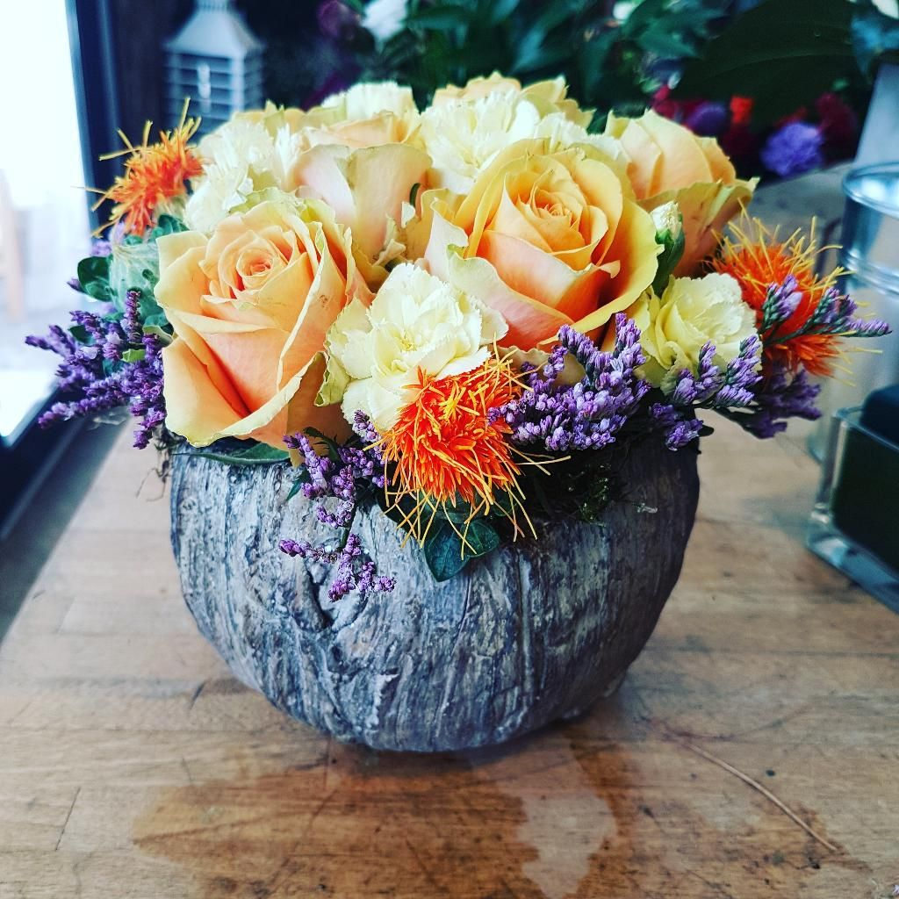
À la main, dans la boutique : bouquet rond, coupe, couronne, bouquet de mariée. Chaque création est unique, jamais deux fois la même.
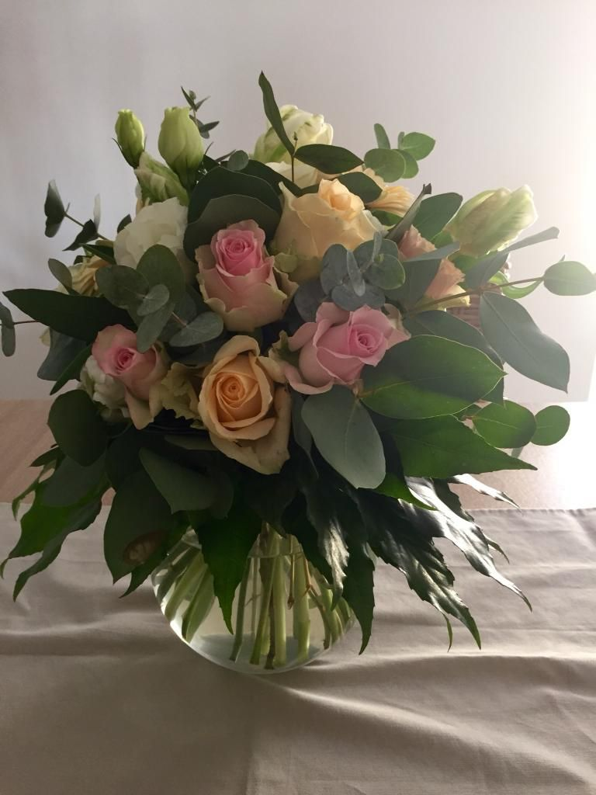
Arche de cérémonie, ambiances de table, couronnes d’EVJF : la décoration se pense dans son ensemble, du bouquet de la mariée jusqu’à la dernière table.
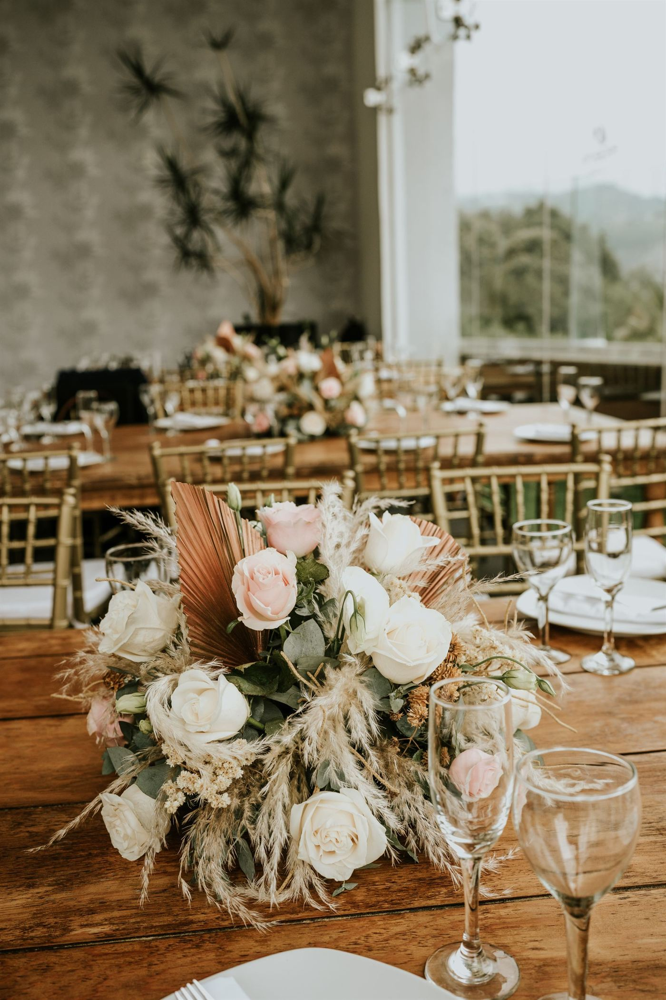
Du bouquet du jour à la décoration d’un grand jour : tout est composé à la main, au rythme des saisons, selon votre histoire et votre budget.
Faites défilerRoses, pivoines, fleurs de saison : un bouquet rond, pastel ou vitaminé, prêt à offrir.
Dites-nous pour qui, pour quelle occasion, avec quel budget : Céline imagine la composition qui vous ressemble.
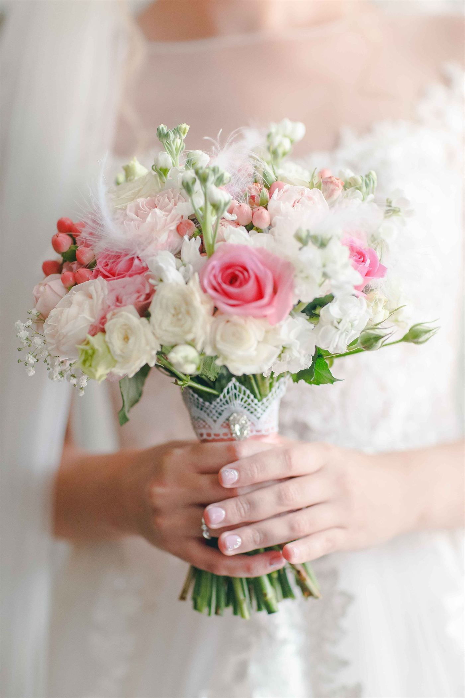
Bouquet de la mariée, arche, ambiances de réception, couronnes d’EVJF. Selon les disponibilités de Céline.
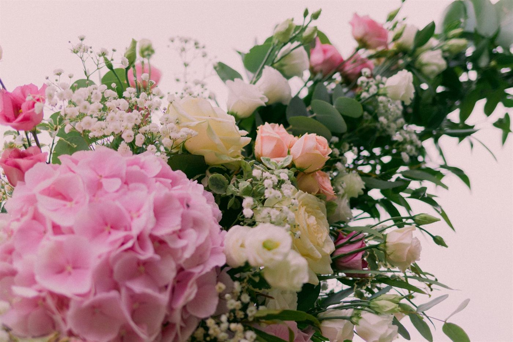
Décoration de baptême, centres de table, tables de Noël : des fleurs pour que la fête ait du relief.
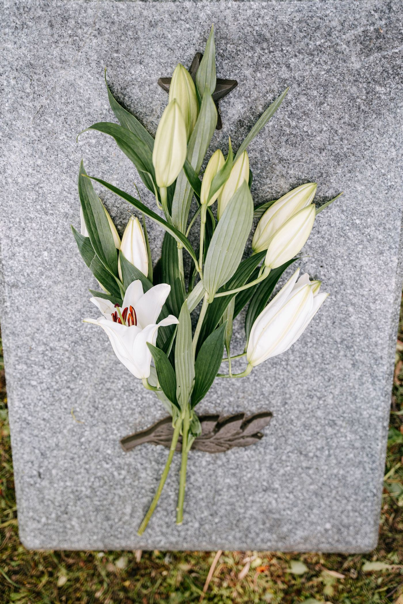
Des compositions sobres et justes pour accompagner un au revoir. Appelez la boutique, on vous écoute.
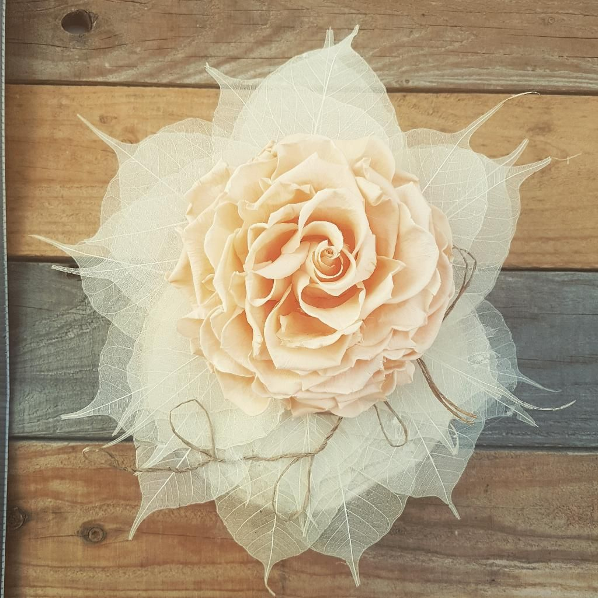
Rose stabilisée sur feuilles de squelette, bijoux de fleurs, bouquets séchés : la beauté sans date limite.
Bruyères, rosiers, passiflore, muguet… pour fleurir balcon, terrasse et jardin, ou garnir une tombe à la Toussaint.
de note moyenne sur Google
avis clients publiés sur Google
depuis la création de la boutique, en 2010
jours d’ouverture : fermé le mercredi seulement
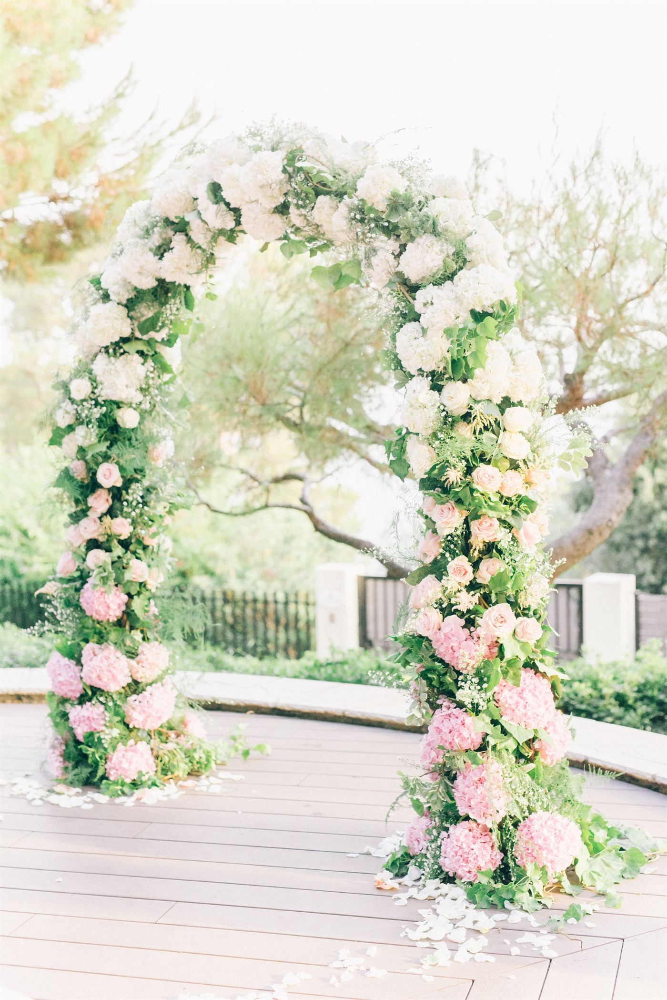
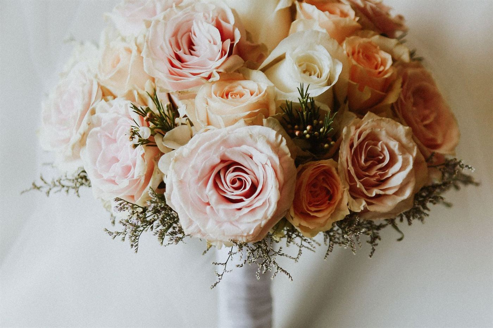
Bouquet de la mariée, arche de cérémonie, ambiances de réception : Céline imagine la décoration avec vous, à partir de quelques photos et de vos envies, même quand le calendrier est serré.
« Nous avons eu le mariage de nos rêves, et tout ça pour un prix très correct. »
Avis PagesJaunes · août 2022
Céline fleurit désormais un nombre limité de mariages. Écrivez-lui tôt pour savoir si votre date est possible.
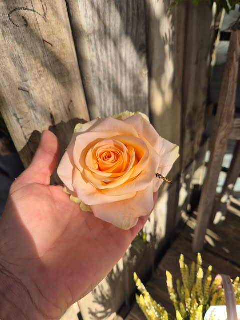
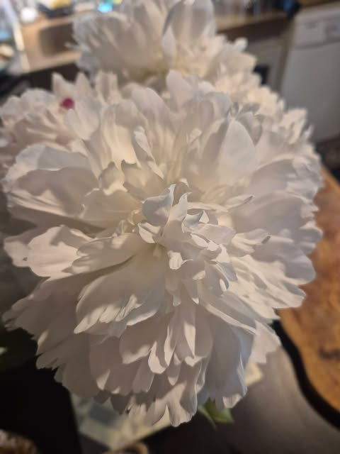
Des créations de l’atelier et des inspirations pour imaginer la vôtre. Touchez une image pour l’agrandir.
Autant humainement que professionnellement, tout est parfait. L’accueil est chaleureux, les conseils sont sincères et toujours adaptés, et les compositions sont tout simplement magnifiques. On sent la passion dans chaque bouquet.
Elle a été parfaite ! Très professionnelle et artistique. Elle propose même une arche pour les mariages. Le bouquet de la mariée a eu un grand succès. Nous la recommandons sans hésitation.
Quelle relation de confiance et quelle prestation de qualité ! Enfin une fleuriste ravie d’avoir un thème qui sort de l’ordinaire. Elle a su répondre parfaitement à nos attentes.
Elle a su, avec seulement quelques photos et échanges avec notre wedding planner, comprendre exactement ce que l’on souhaitait… Nous avons eu le mariage de nos rêves, et tout ça pour un prix très correct.
Céline est une personne passionnée. Elle connaît ses fleurs à la perfection et a su donner à notre mariage une dimension florale éblouissante.
Créations alliant originalité et qualité, accueil et service au top !
Choisissez votre création et votre créneau : on prépare le SMS pour Céline, il ne vous reste qu’à l’envoyer. Elle vous confirme directement.
06 21 88 27 86Votre message est prêt
Sur ordinateur, copiez le message et envoyez-le depuis votre téléphone au 06 21 88 27 86, ou appelez directement la boutique. La demande n’est confirmée qu’une fois Céline vous a répondu.
| Lundi | 9h – 12h30 · 16h – 18h |
|---|---|
| Mardi | 9h – 12h30 · 16h – 19h |
| Mercredi | Fermé |
| Jeudi | 9h30 – 12h30 · 15h – 19h |
| Vendredi | 9h30 – 12h30 · 15h – 19h |
| Samedi | 9h30 – 12h30 · 16h – 19h |
| Dimanche | 9h30 – 12h30 |
Horaires susceptibles de varier (jours fériés, fêtes) : au moindre doute, un coup de fil.
Il est là… L’arbre à vœux a pris racine à côté de la boutique. De la douceur, de la beauté.